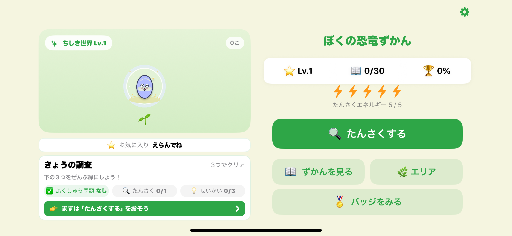
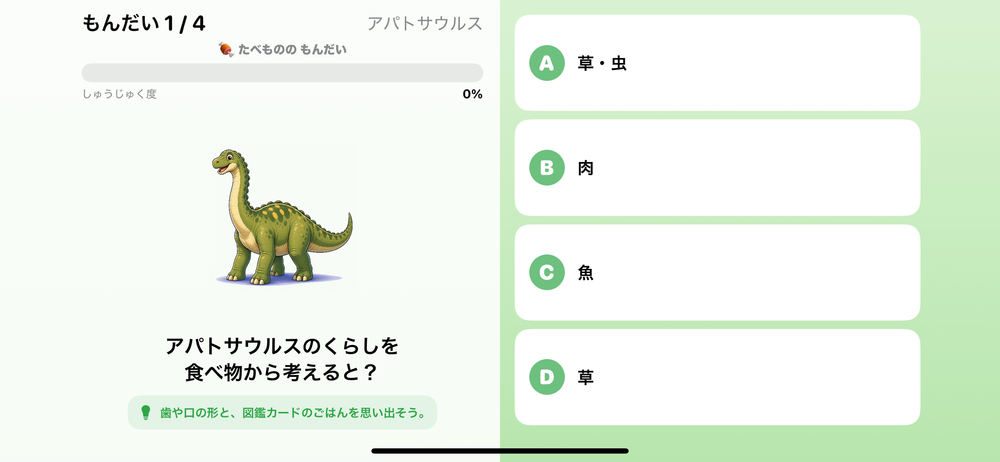
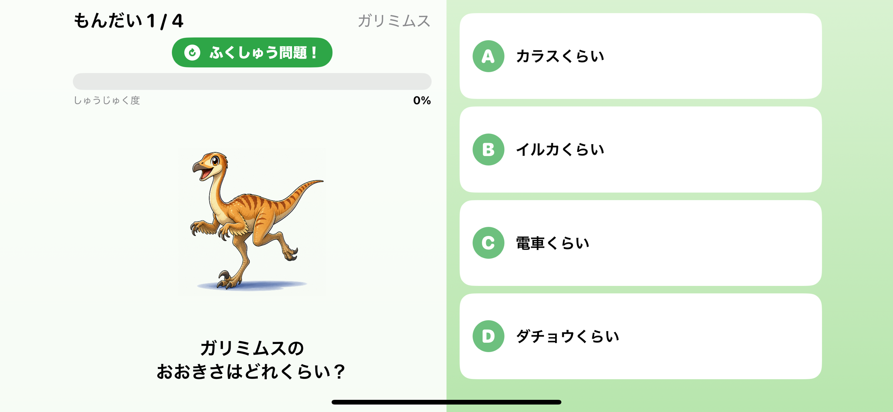
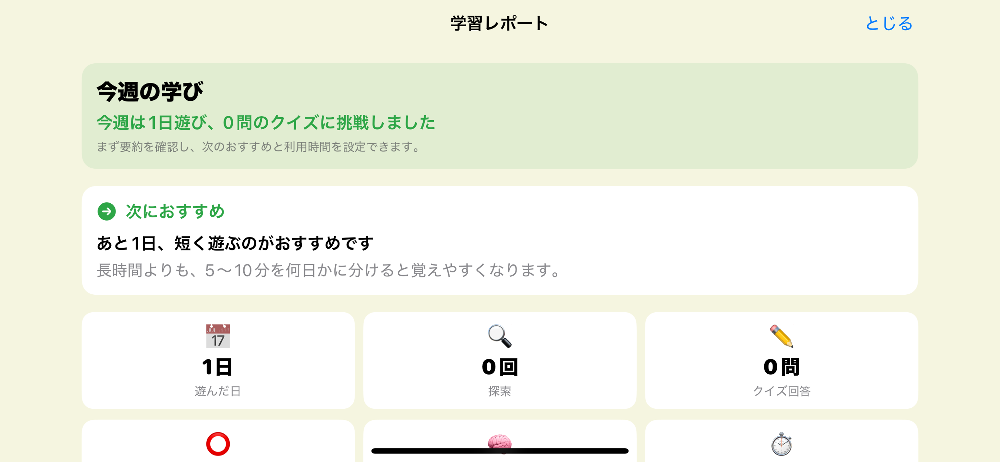

4〜6歳ごろの子どもが、恐竜を探しながら学べるiPhoneアプリ「ぼくの恐竜ずかん」を個人開発し、App Store Connectへ審査提出しました。 広告なし・外部サーバー送信なしという、子どもにそのまま渡せる設計にしています。この記事では、なぜこのアプリを作ったのか、どんな体験を目指したのか、開発中にどこで詰まってどう直したのかを、実際の画面と一緒に記録します。

ホーム画面。探索エネルギーとレベル、図鑑の進み具合が一目でわかる構成にしています。
なぜ「恐竜図鑑アプリ」を作ったか
子ども向けの知育アプリには、広告や動画視聴を挟むものが少なくありません。遊んでいる途中に広告が挟まると、子どもの集中も、見守る保護者の安心感も削られます。私は元ゲーム開発エンジニアで、今はビジネスアプリの企画・開発をClaude Code × CodeXを使った個人開発で進めていますが、「子どもに安心して渡せるアプリを、自分の手で作れないか」という気持ちがずっとありました。
そこで企画したのが「ぼくの恐竜ずかん」です。恐竜を探索して発見し、クイズに答えて図鑑を育てていく、広告なしの学習アプリです。理屈より先に「動くもの」を作って触ってみることを優先し、SwiftUIでプロトタイプを組み、実際に画面が動く状態から少しずつ機能を足していきました。プロトタイプが早く動けば、良し悪しの判断も早くなります。これは個人開発でもビジネスアプリ開発でも変わらない進め方です。
目指した体験：ただの図鑑ではなく「探索して覚える」流れ
恐竜図鑑と聞くと、一覧を眺めて終わる静的なコンテンツを想像するかもしれません。しかし私が目指したのは、探索・発見・クイズ・復習という流れを繰り返しながら、子どもが少しずつ恐竜に詳しくなっていく体験でした。

探索エネルギーを使って恐竜を発見する瞬間。ここから図鑑に追加され、クイズにつながります。
探索して恐竜と出会い、クイズに答えて図鑑のページを埋めていく。間違えた問題は復習として再度出題される。この一連のループが、4〜6歳の子どもが毎日短時間でも戻ってきたくなる設計になるよう意識しました。

通常クイズの画面。発見した恐竜そのものについて出題されます。
クイズの母数は、共通問題130問、個体別問題1,345候補の合計1,475候補、登場する恐竜・古代生物は30個体です。同じ恐竜でも毎回違う角度から問われるようにすることで、「暗記」ではなく「繰り返し触れて自然に覚える」感覚に近づけています。
開発で大事にしたこと
子ども向けアプリとして、機能を増やすこと以上に「削ること」「守ること」に時間を使いました。特に意識したのは次の3点です。
4〜6歳が読める文章にする
クイズの問題文やヒントは、漢字を避けてひらがな中心にし、一文を短く保ちました。大人向けの図鑑アプリの文章をそのまま流用するのではなく、対象年齢に合わせて一からトーンを作り直しています。
広告なし・外部送信なしを貫く
スタミナ制の探索エネルギーを採用していますが、不足したときに動画視聴を要求する設計は途中でやめました。子どもがどこを触っても不安な導線に当たらないことを、機能追加よりも優先しています。
横向き固定・短時間プレイに最適化する
iPhone専用・iOS 17以降・横向き固定という仕様にし、1回のプレイが数分で完結するテンポにしました。保護者が横で少し目を離しても、区切りよく終われる長さを意識しています。

ヒント付きクイズ。答えに迷ったときも、自分の力で正解にたどり着けるよう補助を入れています。

復習問題。一度間違えた問題を後日もう一度出すことで、定着を後押しします。
苦労したところ
機能そのものは早い段階で動いていましたが、「子どもが実際に触ったときに違和感なく使える」状態にするまでには、細かい調整が何度も必要でした。特に印象に残っている4つを記録します。
1. クイズの難易度を、いきなり難しくしすぎない
単に問題数を増やすだけでは、4〜6歳向けの学習体験にはなりませんでした。初回から分類名や学名由来のような難しい問題を出すと、子どもには入り口が重すぎます。そこで最初は「食べもの」「大きさ」のような直感的に答えられるテーマを優先し、習熟度が上がるにつれて時代、化石、発見地、分類へと出題を広げる形に設計し直しました。子どもが答えやすい順番を、後から丁寧に組み直した形です。
2. 共通問題が、直前に発見した恐竜とズレる
個体ごとの専用問題と、複数の恐竜に共通する問題を交互に出す仕組みにしていましたが、何も考えずに共通問題を混ぜると、直前に発見した恐竜とほとんど関係のない問題が出てしまうことがありました。対応として、共通問題は直前の個体問題と同じテーマからのみ選ぶようにし、対象個体の時代・環境・食性と矛盾する問題は除外しました。条件に合う共通問題がない場合は、無理に無関係な問題で穴埋めしない方針にしています。ランダム性を持たせつつ、学びの流れが崩れないようにする調整でした。
3. 恐竜画像が、名前やバッジからはみ出す
発見画面では恐竜の画像を大きく見せたい一方で、名前やレア度バッジを隠すわけにはいきません。特に大型・最大級の個体で拡大率を上げると、画像が表示領域からはみ出しやすくなりました。最終的な表示サイズが領域内に収まるよう調整し、表示領域に clipped() を適用して、通常クイズとエキスパートクイズにも同じ方針を適用しました。迫力を出すことと、情報を隠さないことを両立させる調整です。
4. 白背景の恐竜素材が、アプリ画面で浮く
恐竜素材の一部は白背景のPNGだったため、そのまま配置すると背景の上で白い四角として目立ってしまいました。対応として blendMode(.multiply) を使い、薄緑を基調としたエリア背景に自然になじむよう調整しています。素材そのものを作り直すのではなく、表示側の合成方法を工夫することで解決しました。
「動くものにしか、人は興味を持たない」 — クイズのロジックも画像の調整も、企画書の上では正しく見えても、実際に子どもの目線で動かしてみて初めて「まだ重い」「ここが浮いている」と気づけました。動かして、触って、直す。このサイクルを何周も回したことが、今回の一番の作業でした。

保護者レポート画面。計算式ゲートを通過すると開く仕組みにし、子ども任せにしすぎない設計にしています。
App Store申請までに準備したこと
主要機能が動いていても、それだけではストアに出せません。「アプリを作る」ことと「ストアに出す」ことは、はっきり別の作業でした。今回準備したのは次の項目です。
- App Icon・Launch Screenの用意
- App Store Connect提出用スクリーンショット7枚（2778×1284の横向きPNG）
- アプリ説明文・年齢区分・プライバシー関連の回答
- 広告なし・外部送信なしの表現が、実際の挙動と矛盾しないかの確認
- UIテストでの動作検証（4 tests / 0 failures）
- Release / generic iOS構成でのビルド確認（BUILD SUCCEEDED）
アプリ本体の実装が一区切りついた後も、素材づくりと確認作業に想像以上の時間がかかりました。特にスクリーンショットは、元の撮影画像が縦向きになっているものもあり、提出用に横向き2778×1284で7枚を用意し直す必要がありました。
| 項目 | 内容 |
|---|---|
| アプリ名 | ぼくの恐竜ずかん |
| Bundle ID | com.ravencrow.zukangrowth |
| 申請バージョン | Version 1.1.0 / Build 3 |
| 対象端末 | iPhone専用、iOS 17以降 |
| 画面向き | 横向き固定 |
| 収益・広告 | 広告なし、アプリ内課金あり |
| データ送信 | 外部サーバーへの送信なし |
| 現在のステータス | App Store Connectへ審査提出中 |
2026年7月14日時点で、App Store Connectへの審査提出が完了しています。まだ公開はされていないため、この記事を書いている時点ではダウンロードできません。審査の進捗が動き次第、続報としてまとめる予定です。
まとめ
「ぼくの恐竜ずかん」は、企画から実装、細かい調整、申請準備まで、すべて一人で進めた個人開発です。SwiftUIでの実装そのものより、子どもの目線に立って「まだ重い」「ここが浮いている」を一つずつ直していく作業の方が、実は時間がかかりました。それでも、動くものを早い段階で作り、実際に触りながら直していくやり方は、非エンジニアであってもアプリをつくりたい人にとって再現できるプロセスだと思っています。
- クイズは易しいテーマから始め、習熟度に応じて難易度を広げる
- ランダム性があっても、直前の文脈と矛盾しないよう出題ロジックを絞る
- 画像の迫力と情報の可読性は、表示領域とクリッピングの調整で両立できる
- 広告・外部送信をしない設計は、機能を削る決断の積み重ねで作られる
- 「アプリを作る」と「ストアに出す」は別の作業として、後半の準備期間を見込んでおく
今後は実機での最終確認と審査対応を続けながら、公開後の続報も記事にしていく予定です。